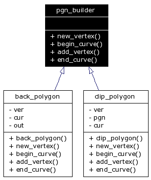

Main Page
|
Class Hierarchy
|
Alphabetical List
|
Class List
|
File List
|
Class Members
pgn_builder Struct Reference
Inheritance diagram for pgn_builder:

[
legend
]
List of all members.
Public Member Functions
virtual int
new_vertex
(double x, double y)=0
virtual void
begin_curve
()=0
virtual void
add_vertex
(int)=0
virtual void
end_curve
()=0
Detailed Description
Definition at line
219
of file
ps_data.h
.
The documentation for this struct was generated from the following file:
ps_data.h
Generated on Чт 31. май 22:11:11 2007 by
1.4.3
 1.4.3
1.4.3